pacman::p_load(phyloseq, tidyverse, ggpubr, microViz, fun.gus, ggbeeswarm, patchwork, install = FALSE)
source("code/R/plotting_aesthetics.R")
load("data/06_Flow_Cytometry/euk_flow_physeq.RData")Measure Alpha Diversity and Assess Sequencing Depth
Load packages
Check Rarefaction
This function comes from fun.gus!
set.seed(314)
rarefaction_data <- fast_rarefaction_curves(euk_flow_physeq, iterations = 50, steps = 40)Plotting Rarefaction Curves
rarefaction_data %>%
pivot_longer(hill0:hill2, names_to = "Order", values_to = "Value") %>%
ggplot(aes(x = depth, y = Value, color = sample_id)) +
stat_summary(geom = "line", fun = mean) +
facet_wrap(~Order, scales = "free_y") +
theme(legend.position = "none")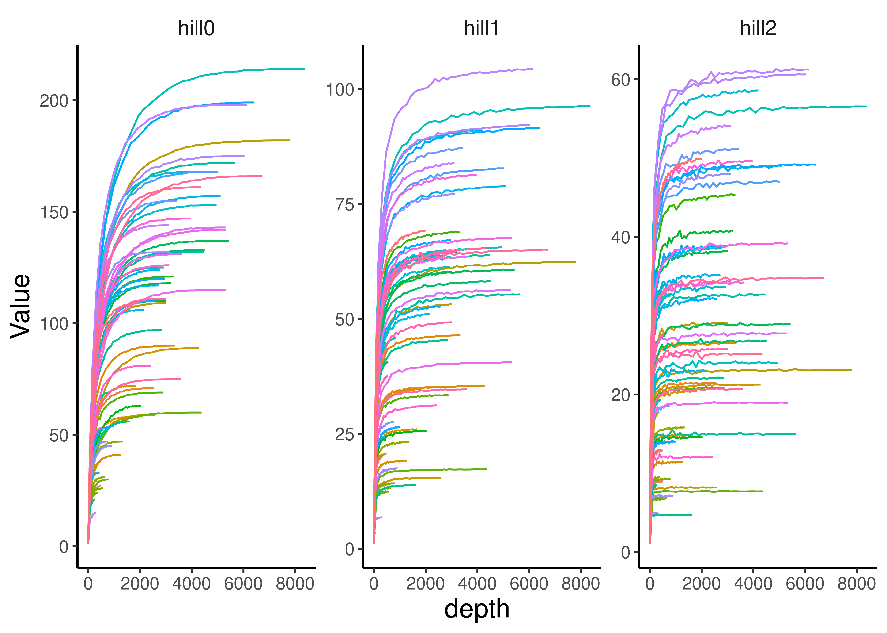
rarefaction_data %>%
ggplot(aes(x = depth, y = hill0, color = sample_id)) +
stat_summary(geom = "line", fun = mean) +
theme(legend.position = "none") +
coord_cartesian(ylim = c(0,100), xlim = c(0, 2000))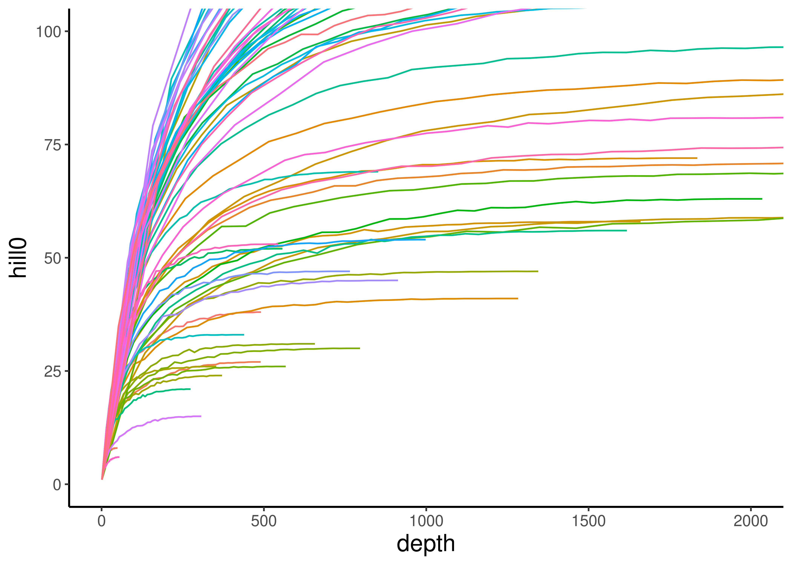
They all “appear” to flatten, but we can be real with ourselves that we probably want at least 10000 reads.
summarized_rarefaction <-
rarefaction_data %>%
group_by(sample_id) %>%
filter(depth == max(depth)) %>%
pivot_longer(hill0:hill2, names_to = "Order", values_to = "Value") %>%
ungroup() %>%
group_by(sample_id, Order) %>%
summarize(depth = mean(depth),
value = mean(Value))
summarized_rarefaction %>%
ggplot(aes(x = depth, y = value)) +
geom_point() +
facet_wrap(~Order, scales = "free_y") +
stat_cor() +
geom_vline(xintercept = 500)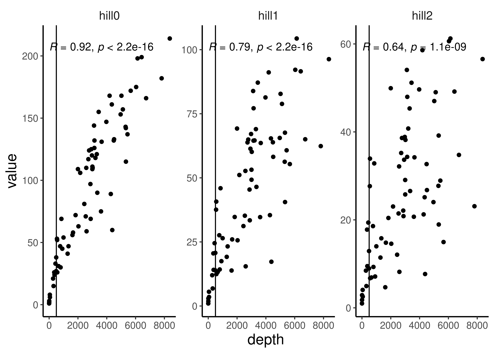
Jeez! What would you do here? It’s highly correlated, across the entire range of depth. I think our best bet it so pick a reasonable depth cutoff for this range of richness, and then just accept it. I’m going with 500 (reviewers pls advise).
sort(sample_sums(euk_flow_physeq)) %>% head(14)KH_D014 KH_D066 KH_D079 KH_D004 KH_D002 KH_D071 KH_D031 KH_D061 KH_D015 KH_D016
1 1 6 7 49 55 274 307 353 371
KH_D038 KH_D003 KH_D001 KH_D074
439 490 491 544 # Who are these?
euk_flow_physeq %>%
prune_samples(sample_sums(.) < 500, .) %>%
sample_data() %>%
data.frame() Sample_ID DNA_ID input filtered denoisedF
KH_D001 AAM_ERI_20240522_15_FP_ET_1 KH_D001 241601 158738 158174
KH_D002 AAM_ERI_20240522_15_FP_BT_1 KH_D002 132159 87000 85503
KH_D003 AAM_ERI_20240522_22_FP_ET_1 KH_D003 923203 586958 584580
KH_D004 AAM_ERI_20240523_28_FP_ET_1 KH_D004 76761 49644 48146
KH_D014 AAM_ERI_20240520_91_FP_ET_1 KH_D014 16226 10493 9569
KH_D015 AAM_ERI_20240523_95_FP_ET_1 KH_D015 635660 414471 413149
KH_D016 AAM_ERI_20240522_932_FP_ET_1 KH_D016 295775 192424 191575
KH_D031 AAM_ERI_20240812_43_FP_BT_1 KH_D031 813924 537282 528632
KH_D038 AAM_ERI_20240813_78_FP_BT_1 KH_D038 938495 600428 593209
KH_D061 AAM_ERI_20240914_38_FP_BT_1 KH_D061 778932 507578 502812
KH_D066 AAM_ERI_20240913_60_FP_ET_1 KH_D066 100755 65831 59630
KH_D071 AAM_ERI_20240915_78_FP_BT_1 KH_D071 93840 61805 57284
KH_D079 AAM_ERI_20240914_959_FP_ET_1 KH_D079 27310 18180 17183
denoisedR merged nochim perc_reads_retained Station_ID Date Depth
KH_D001 157756 155519 131823 54.56227 15 20240522 5.0
KH_D002 84762 81715 75706 57.28403 15 20240522 61.7
KH_D003 583932 577232 499039 54.05518 22 20240522 5.0
KH_D004 47598 39692 25026 32.60249 28 20240523 5.0
KH_D014 9310 7749 6567 40.47208 91 20240520 5.0
KH_D015 412953 407988 361508 56.87128 95 20240523 5.0
KH_D016 191514 189487 153449 51.88031 932 20240522 5.0
KH_D031 528995 514884 474061 58.24389 43 20240812 20.8
KH_D038 593015 579421 535557 57.06551 78 20240813 22.0
KH_D061 501708 492313 463947 59.56194 38 20240914 20.8
KH_D066 58624 45377 30100 29.87445 60 20240913 5.0
KH_D071 55226 45009 34016 36.24893 78 20240915 22.0
KH_D079 16989 15239 12179 44.59539 959 20240914 5.0
Station_Name Water_Surface_Temp_C Latitude Longitude Month
KH_D001 ER15M 15.15 42.50150 -79.89365 May
KH_D002 ER15M 15.15 42.50150 -79.89365 May
KH_D003 ECSERN22n 17.50 42.63395 -80.87372 May
KH_D004 ECSERI28n 16.20 42.18142 -80.15545 May
KH_D014 ER91M 18.27 41.84158 -82.91743 May
KH_D015 ER95b 15.30 42.00010 -80.66532 May
KH_D016 ECSER932n 16.10 42.79123 -79.21092 May
KH_D031 ER 43 23.05 41.78883 -81.94487 August
KH_D038 ER 78M 23.08 42.11645 -81.24972 August
KH_D061 ER 38 21.50 42.28197 -81.67187 September
KH_D066 ER 60 21.30 41.89052 -83.19653 September
KH_D071 ER 78M 20.90 42.11722 -81.25038 September
KH_D079 ECS ER 959n 22.00 42.18992 -82.18667 September
Depth_Class Rep_ID Basin
KH_D001 S May_15_S E
KH_D002 B May_15_B E
KH_D003 S May_22_S C
KH_D004 S May_28_S C
KH_D014 S May_91_S W
KH_D015 S May_95_S C
KH_D016 S May_932_S E
KH_D031 B August_43_B C
KH_D038 B August_78_B C
KH_D061 B September_38_B C
KH_D066 S September_60_S W
KH_D071 B September_78_B C
KH_D079 S September_959_S C
Notes
KH_D001 NA NA Integrated sample; discrete depths separated by semi-colon NA
KH_D002 NA NA NA NA
KH_D003 NA NA Integrated sample; discrete depths separated by semi-colon NA
KH_D004 NA NA Integrated sample; discrete depths separated by semi-colon NA
KH_D014 did vortex step before incubating PW1 at 65C NA Integrated sample; discrete depths separated by semi-colon NA
KH_D015 NA NA Integrated sample; discrete depths separated by semi-colon NA
KH_D016 did vortex step before incubating PW1 at 65C NA Integrated sample; discrete depths separated by semi-colon NA
KH_D031 Spin column from 178030015_2. NA DCL at 19m NA
KH_D038 NA NA NA Coleman Lab sampling Surface, mid and B-; DCL just above the thermocline
KH_D061 NA NA BOTTOM; Within the hypoxic hypolimnion MULTIPLE DEPTHS
KH_D066 Microcystis observed on filter. Did vortex step before incubating PW1 at 65C. NA Integrated sample; discrete depths separated by semi-colon NA
KH_D071 Spin column from 178030015_2. NA Very sulfurous smell! MULTIPLE DEPTHS
KH_D079 NA NA Integrated sample; discrete depths separated by semi-colon NA
Microcystin_Total Anatoxin_Total Toxins_Measured avg_cells_per_ml
KH_D001 NA NA <NA> 3836636
KH_D002 NA NA <NA> 2654856
KH_D003 NA NA <NA> 4280014
KH_D004 NA NA <NA> 3846591
KH_D014 NA NA <NA> 3920972
KH_D015 NA NA <NA> 4524854
KH_D016 NA NA <NA> 4813803
KH_D031 NA NA <NA> 7624058
KH_D038 NA NA <NA> 4166783
KH_D061 NA NA <NA> 5408190
KH_D066 0.03 0.000 Yes 2124998
KH_D071 NA NA <NA> 5696577
KH_D079 0.01 0.007 Yes 7164395
rsg_total_per_ml rsg_pos_per_ml rsg_perc_pos rsg_mfi
KH_D001 NaN NaN NaN NaN
KH_D002 NaN NaN NaN NaN
KH_D003 NaN NaN NaN NaN
KH_D004 NaN NaN NaN NaN
KH_D014 NaN NaN NaN NaN
KH_D015 NaN NaN NaN NaN
KH_D016 NaN NaN NaN NaN
KH_D031 NaN NaN NaN NaN
KH_D038 NaN NaN NaN NaN
KH_D061 4772538 2638896 0.5617228 3180.500
KH_D066 1760606 1259273 0.7157689 2107.750
KH_D071 5012493 3098826 0.6204316 2722.000
KH_D079 7040178 4108259 0.5856151 1634.125
pig_counts_chl_big pig_counts_chl_small pig_counts_high_chl_high_pe
KH_D001 3403.400 8628.620 3630.293
KH_D002 280.280 1184.517 430.430
KH_D003 4094.090 32412.380 15348.667
KH_D004 1995.327 8762.087 3453.450
KH_D014 8952.277 29736.373 20460.440
KH_D015 3279.943 14280.933 10340.330
KH_D016 3937.267 10166.823 3500.163
KH_D031 15261.913 67600.867 62702.640
KH_D038 9009.000 35061.693 28742.047
KH_D061 3633.630 84754.670 64968.237
KH_D066 10050.040 30390.360 20694.007
KH_D071 5301.963 78942.197 63119.723
KH_D079 11474.797 131731.600 90984.227
pig_counts_high_chl_no_pe pig_counts_low_chl_no_pe
KH_D001 5785.7800 4537.867
KH_D002 276.9433 1514.847
KH_D003 16753.4033 8081.407
KH_D004 5665.6600 2772.770
KH_D014 13353.3400 11211.200
KH_D015 5301.9633 5712.373
KH_D016 7754.4133 4881.543
KH_D031 2509.1733 47333.953
KH_D038 1601.6000 24184.160
KH_D061 3927.2567 31341.310
KH_D066 4748.0767 22899.543
KH_D071 5035.0300 26252.893
KH_D079 10116.7733 58058.000
pig_counts_no_chl_low_pe total_chl_counts
KH_D001 3573.5700 12032.020
KH_D002 463.7967 1464.797
KH_D003 3550.2133 36506.470
KH_D004 1868.5333 10757.413
KH_D014 13723.7100 38688.650
KH_D015 73780.3733 17560.877
KH_D016 7664.3233 14104.090
KH_D031 173126.2867 82862.780
KH_D038 16336.3200 44070.693
KH_D061 30490.4600 88388.300
KH_D066 14744.7300 40440.400
KH_D071 25445.4200 84244.160
KH_D079 7524.1833 143206.397floor_physeq <-
euk_flow_physeq %>%
prune_samples(sample_sums(.) > 500, .)
rar_limit <- min(sample_sums(floor_physeq))
even_rarefaction_results <-
rarefaction_alpha_calculations(floor_physeq,
rarefy_depth = rar_limit,
iterations = 100,
method = "taxonomic",
seed = 031491,
threads = 8)[1] "Calculating taxonomic diversity approaches on floor_physeq"for_join <-
summarized_rarefaction %>%
select(Sample = sample_id, Measure = Order, non_rare = value) %>%
mutate(Measure = case_when(Measure == "hill0" ~ "Richness",
Measure == "hill1" ~ "Shannon",
Measure == "hill2" ~ "Simpson"))
even_rarefaction_results %>%
left_join(for_join) %>%
ggplot(aes(x = non_rare, y = qD)) +
geom_point() +
geom_smooth(method = "lm", se = FALSE, color = "orange" ) +
facet_wrap(~Measure, scales = "free") +
geom_abline(intercept = 0, slope = 1) +
labs(x = "Non-Rarefied Values", y = "Rarefied to Even Depth") +
stat_regline_equation(formula = y ~ x + 0, color = "orange")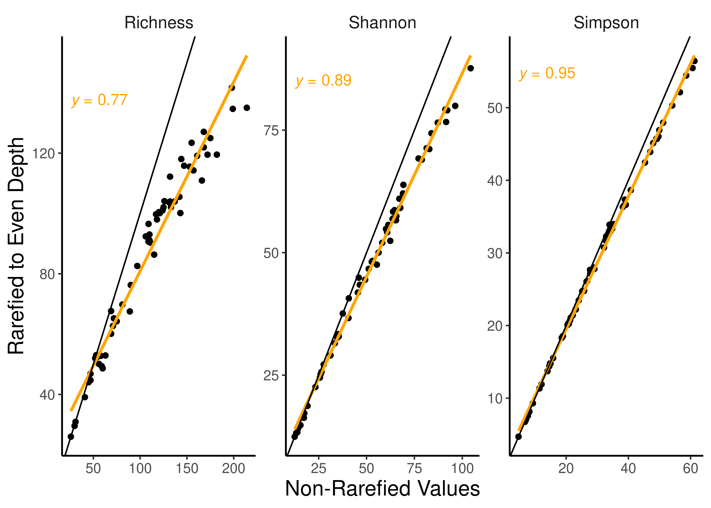
Okay, so here we are comparing the values we get for alpha diversity, either by rarefying all samples to an even depth (y axis) or just using observed values without rarefaction (x-axis). For Hill numbers > 0 (Shannon and Simpson) the values are essentially equal. However, we do have lower observed Richness when we rarefy to an even depth, especially at higher “observed richnesses”.
Examining Richness
sample_df <- sample_data(floor_physeq) %>%
data.frame()
sample_and_div <-
even_rarefaction_results %>%
rename(DNA_ID = Sample) %>%
left_join(sample_df)sample_and_div %>%
mutate(Month = factor(Month, levels = c("May","August","September"))) %>%
ggplot(aes(x = Month, y = qD)) +
geom_boxplot() +
geom_point() +
facet_wrap(~Measure, scales = "free")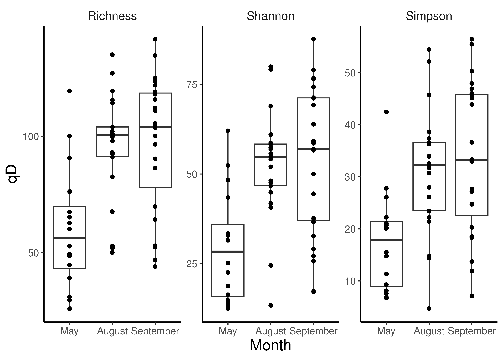
sample_and_div %>%
filter(Measure == "Richness") %>%
mutate(Month = factor(Month, levels = c("May","August","September")),
Basin = factor(Basin, levels = c("W","C","E"))) %>%
ggplot(aes(x = Basin, y = qD)) +
geom_boxplot() +
geom_point() +
facet_wrap(~Month, scales = "free")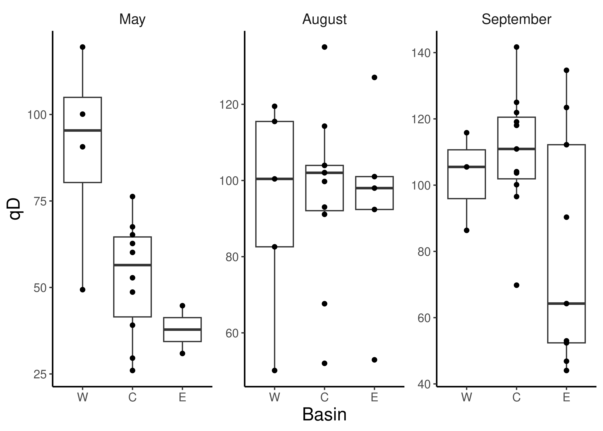
sample_and_div %>%
filter(Measure == "Richness") %>%
mutate(Month = factor(Month, levels = c("May","August","September")),
Basin = factor(Basin, levels = c("W","C","E"))) %>%
ggplot(aes(x = Depth_Class, y = qD)) +
geom_boxplot() +
geom_point() +
facet_wrap(~Month, scales = "free")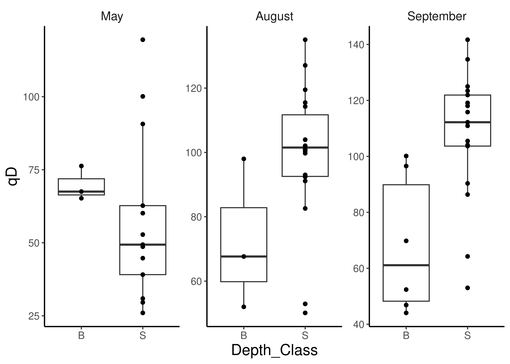
sample_and_div %>%
filter(Measure == "Richness") %>%
mutate(Month = factor(Month, levels = c("May","August","September")),
Basin = factor(Basin, levels = c("W","C","E"))) %>%
ggplot(aes(x = Depth_Class, y = qD)) +
geom_boxplot() +
geom_point() +
facet_wrap(~Month)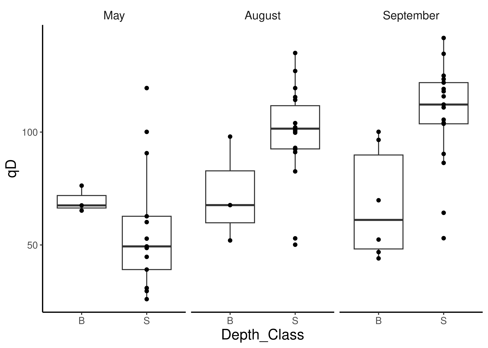
sample_and_div %>%
filter(Measure == "Shannon") %>%
mutate(Month = factor(Month, levels = c("May","August","September")),
Basin = factor(Basin, levels = c("W","C","E"))) %>%
ggplot(aes(x = Depth_Class, y = qD)) +
geom_boxplot() +
geom_point() +
facet_wrap(~Month)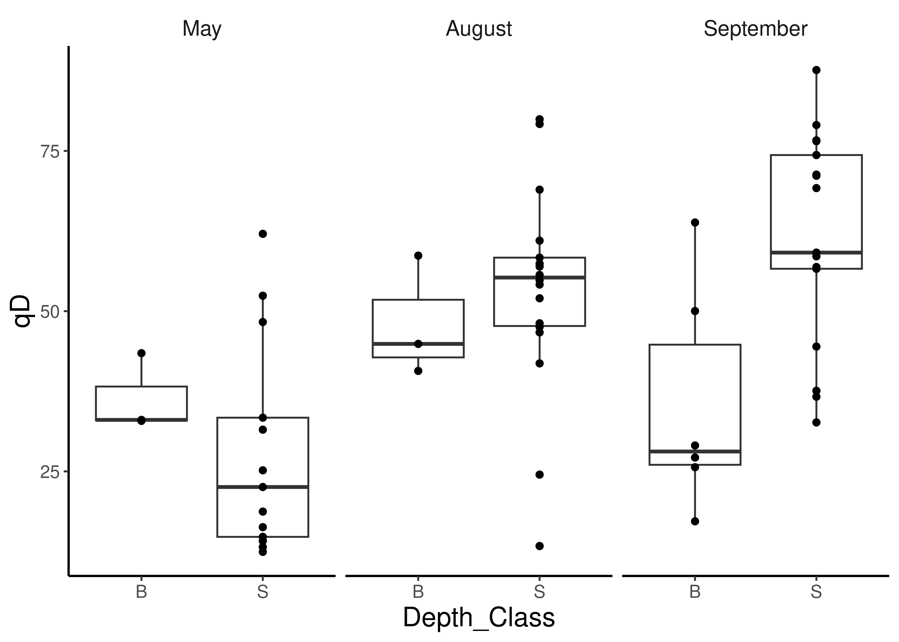
sample_and_div %>%
filter(Measure == "Simpson") %>%
mutate(Month = factor(Month, levels = c("May","August","September")),
Basin = factor(Basin, levels = c("W","C","E"))) %>%
ggplot(aes(x = Depth_Class, y = qD)) +
geom_boxplot() +
geom_point() +
facet_wrap(~Month)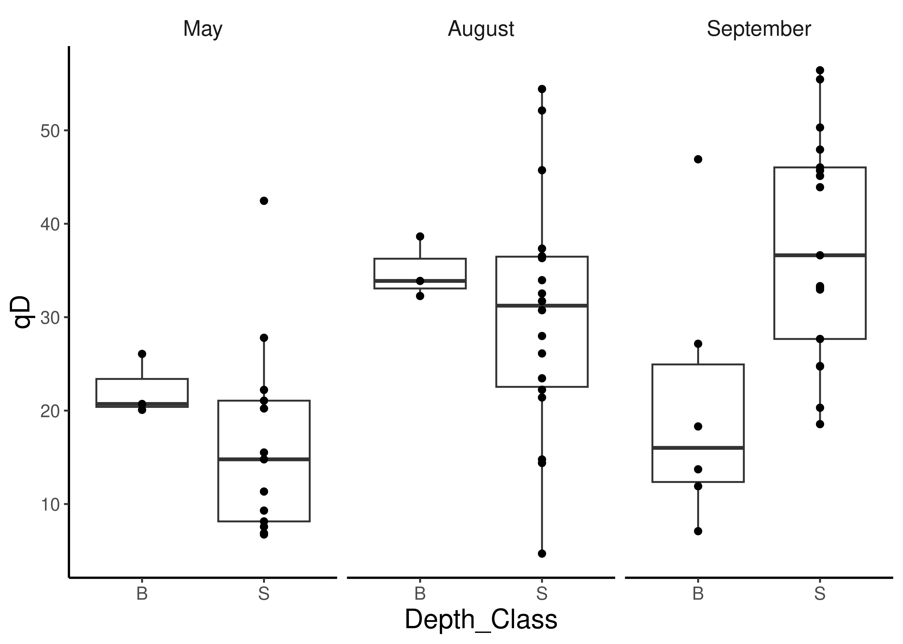
Add diversity to our physeq and save
alpha_for_join <-
even_rarefaction_results %>%
rename(DNA_ID = Sample) %>%
select(-st.dev) %>%
pivot_wider(names_from = Measure, values_from = qD)
euk_diversity_physeq <-
floor_physeq %>%
ps_join(alpha_for_join)
save(euk_diversity_physeq,
file = "data/07_Alpha_Diversity/euk_diversity_physeq.RData")Mapping Eukaryotic Diversity
Mapping Cell Counts
pacman::p_load(sf, terra, tmap, gstat, install = FALSE)
# Define some shapes and objects
raw_erie <- read_sf("data/spatial_imports/hydro_p_LakeErie/hydro_p_LakeErie.shp") %>%
st_transform(crs = "EPSG:4326")
erie_outline <- raw_erie %>%
st_union()
div_data <-
euk_diversity_physeq %>%
sample_data() %>%
data.frame() %>%
select(Sample_ID, Station_ID, Latitude, Longitude, Water_Surface_Temp_C, Month, Depth_Class, Richness, Shannon, Simpson)
div_sf <- div_data %>%
dplyr::filter(!is.na(Longitude)) %>%
st_as_sf(coords = c("Longitude","Latitude"), crs = "EPSG:4326")div_sf %>%
dplyr::filter(Depth_Class == "S") %>%
mutate(Month = factor(Month, levels = c("May", "August","September"))) %>%
ggplot() +
geom_sf(aes(color = Richness), size = 3, alpha = 0.7) +
facet_wrap(~Month, ncol = 1) +
scale_color_distiller(palette = "Spectral") +
geom_sf(data = erie_outline, fill = NA)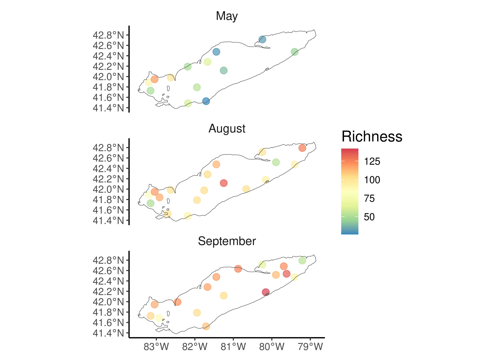
div_sf %>%
dplyr::filter(Depth_Class == "S") %>%
mutate(Month = factor(Month, levels = c("May", "August","September"))) %>%
ggplot() +
geom_sf(aes(color = Shannon), size = 3, alpha = 0.7) +
facet_wrap(~Month, ncol = 1) +
scale_color_distiller(palette = "Spectral") +
geom_sf(data = erie_outline, fill = NA)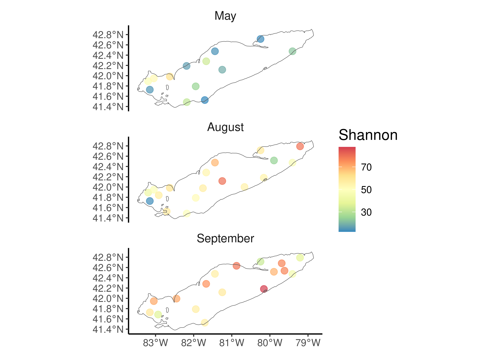
div_sf %>%
dplyr::filter(Depth_Class == "S") %>%
mutate(Month = factor(Month, levels = c("May", "August","September"))) %>%
ggplot() +
geom_sf(aes(color = Simpson), size = 3, alpha = 0.7) +
facet_wrap(~Month, ncol = 1) +
scale_color_distiller(palette = "Spectral") +
geom_sf(data = erie_outline, fill = NA)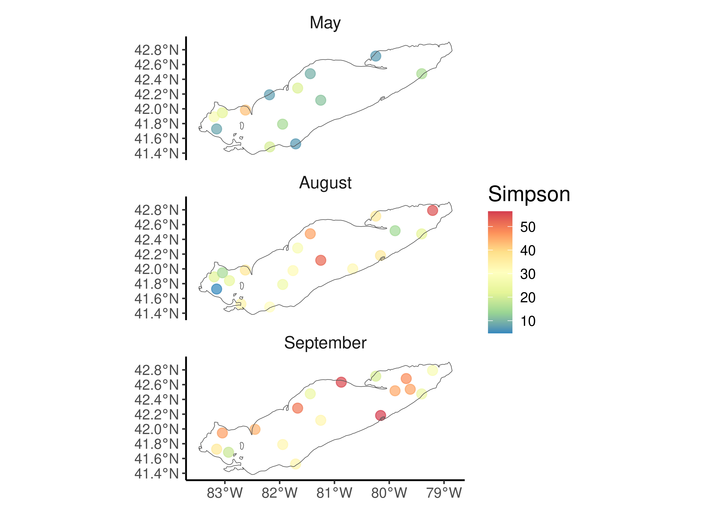
div_sf %>%
ggplot(aes(x = Richness, y = Shannon, color = Simpson)) +
geom_point() +
scale_color_distiller(palette = "Spectral")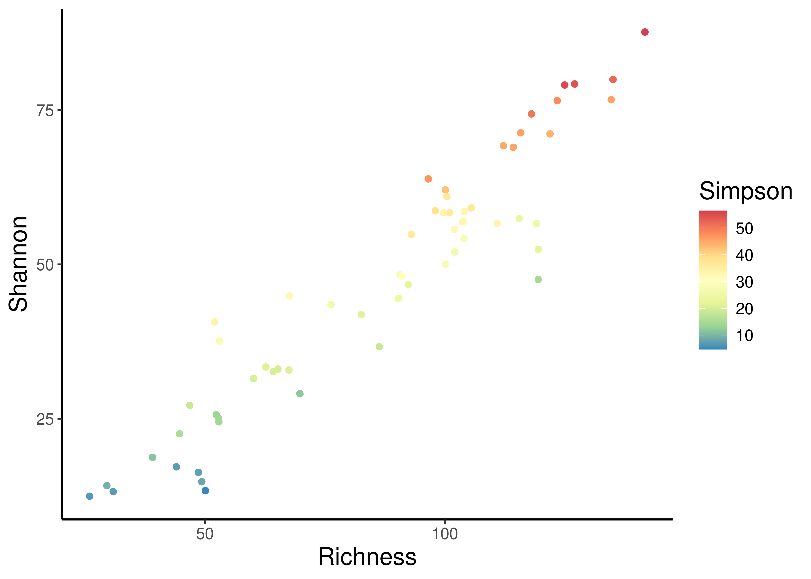
These metrics are all highly correlated with each other. Remember that this is rarefied to an even sequencing depth!
bottom_sf <- div_sf %>%
dplyr::filter(Depth_Class == "B") %>%
mutate(Month = factor(Month, levels = c("May", "August","September")))
shift_bottom_sf <- bottom_sf
st_geometry(shift_bottom_sf) <- st_geometry(bottom_sf) + c(.06,-.03)
shift_bottom_sf <- st_set_crs(shift_bottom_sf, st_crs(bottom_sf))
div_sf %>%
dplyr::filter(Depth_Class == "S") %>%
mutate(Month = factor(Month, levels = c("May", "August","September"))) %>%
ggplot() +
geom_sf(data = shift_bottom_sf, aes(color = Richness), size = 4, alpha = 1) +
geom_sf(aes(color = Richness), size = 4, alpha = 1) +
facet_wrap(~Month, ncol = 1) +
scale_color_distiller(palette = "Spectral") +
geom_sf(data = erie_outline, fill = NA)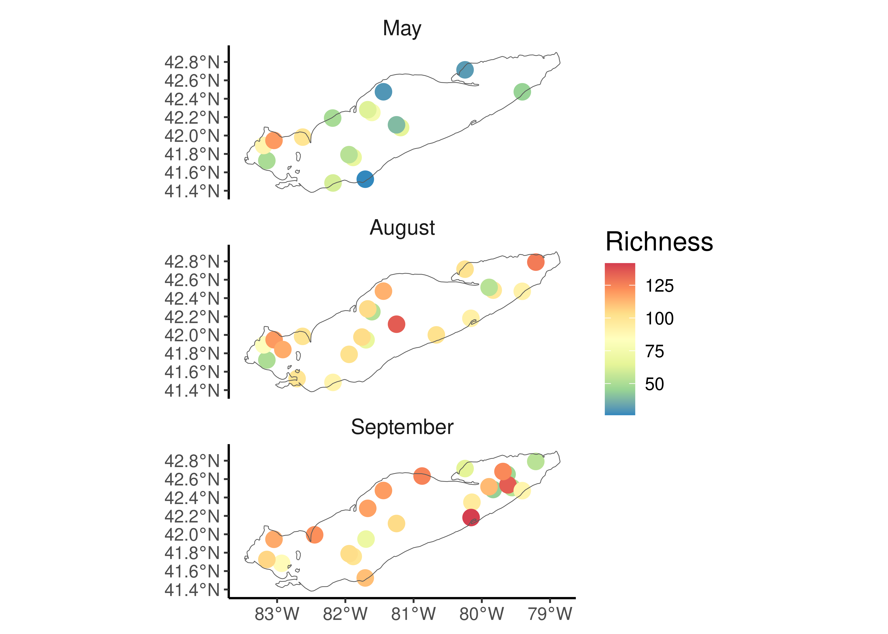
devtools::session_info()─ Session info ───────────────────────────────────────────────────────────────
setting value
version R version 4.3.3 (2024-02-29)
os Rocky Linux 9.5 (Blue Onyx)
system x86_64, linux-gnu
ui X11
language (EN)
collate en_US.UTF-8
ctype en_US.UTF-8
tz America/New_York
date 2026-01-08
pandoc 3.1.1 @ /usr/lib/rstudio-server/bin/quarto/bin/tools/ (via rmarkdown)
quarto 1.3.450 @ /usr/lib/rstudio-server/bin/quarto/bin/quarto
─ Packages ───────────────────────────────────────────────────────────────────
! package * version date (UTC) lib source
abind 1.4-8 2024-09-12 [1] RSPM (R 4.3.3)
ade4 1.7-23 2025-02-14 [1] RSPM (R 4.3.3)
ape 5.8-1 2024-12-16 [1] RSPM (R 4.3.3)
backports 1.5.0 2024-05-23 [1] RSPM (R 4.3.3)
base64enc 0.1-3 2015-07-28 [1] RSPM (R 4.3.3)
P beeswarm 0.4.0 2021-06-01 [?] CRAN (R 4.3.2)
Biobase 2.62.0 2023-10-24 [1] Bioconductor
BiocGenerics 0.48.1 2023-11-01 [1] Bioconductor
P BiocManager 1.30.25 2024-08-28 [?] CRAN (R 4.3.2)
biomformat 1.30.0 2023-10-24 [1] Bioconductor
Biostrings 2.70.3 2024-03-13 [1] Bioconductor 3.18 (R 4.3.3)
bitops 1.0-9 2024-10-03 [1] RSPM (R 4.3.3)
broom 1.0.8 2025-03-28 [1] RSPM (R 4.3.3)
cachem 1.1.0 2024-05-16 [1] RSPM (R 4.3.3)
car 3.1-3 2024-09-27 [1] RSPM (R 4.3.3)
carData 3.0-5 2022-01-06 [1] RSPM (R 4.3.3)
P class 7.3-22 2023-05-03 [?] CRAN (R 4.3.3)
classInt 0.4-11 2025-01-08 [1] RSPM (R 4.3.3)
P cli 3.6.3 2024-06-21 [?] CRAN (R 4.3.2)
P cluster 2.1.6 2023-12-01 [?] CRAN (R 4.3.3)
P codetools 0.2-19 2023-02-01 [?] CRAN (R 4.3.3)
colorspace 2.1-1 2024-07-26 [1] RSPM (R 4.3.3)
cols4all 0.8 2024-10-16 [1] RSPM (R 4.3.3)
crayon 1.5.3 2024-06-20 [1] RSPM (R 4.3.3)
P crosstalk 1.2.1 2023-11-23 [?] CRAN (R 4.3.2)
P data.table 1.16.2 2024-10-10 [?] RSPM (R 4.3.3)
DBI 1.2.3 2024-06-02 [1] RSPM (R 4.3.3)
P devtools 2.4.5 2022-10-11 [?] CRAN (R 4.3.2)
dichromat 2.0-0.1 2022-05-02 [1] RSPM (R 4.3.3)
digest 0.6.37 2024-08-19 [1] RSPM (R 4.3.3)
dplyr * 1.1.4 2023-11-17 [1] RSPM (R 4.3.3)
e1071 1.7-16 2024-09-16 [1] RSPM (R 4.3.3)
P ellipsis 0.3.2 2021-04-29 [?] CRAN (R 4.3.2)
P evaluate 1.0.1 2024-10-10 [?] RSPM (R 4.3.3)
P extraDistr 1.10.0 2023-11-30 [?] CRAN (R 4.3.2)
farver 2.1.2 2024-05-13 [1] RSPM (R 4.3.3)
fastmap 1.2.0 2024-05-15 [1] RSPM (R 4.3.3)
FNN 1.1.4.1 2024-09-22 [1] RSPM (R 4.3.3)
forcats * 1.0.0 2023-01-29 [1] RSPM (R 4.3.3)
foreach 1.5.2 2022-02-02 [1] RSPM (R 4.3.3)
Formula 1.2-5 2023-02-24 [1] RSPM (R 4.3.3)
fs 1.6.5 2024-10-30 [1] RSPM (R 4.3.3)
P fun.gus * 0.5.1 2025-05-16 [?] Github (MarschmiLab/fun.gus@ad8bd98)
P furrr 0.3.1 2022-08-15 [?] CRAN (R 4.3.2)
P future 1.49.0 2025-05-09 [?] RSPM (R 4.3.3)
generics 0.1.3 2022-07-05 [1] RSPM (R 4.3.3)
GenomeInfoDb 1.38.8 2024-03-15 [1] Bioconductor 3.18 (R 4.3.3)
GenomeInfoDbData 1.2.11 2025-04-11 [1] Bioconductor
P ggbeeswarm * 0.7.2 2023-04-29 [?] CRAN (R 4.3.2)
ggplot2 * 3.5.2 2025-04-09 [1] RSPM (R 4.3.3)
ggpubr * 0.6.0.999 2025-05-21 [1] Github (kassambara/ggpubr@6aeb4f7)
ggsignif 0.6.4 2022-10-13 [1] RSPM (R 4.3.3)
P globals 0.18.0 2025-05-08 [?] RSPM (R 4.3.3)
glue 1.8.0 2024-09-30 [1] RSPM (R 4.3.3)
gstat * 2.1-3 2025-05-21 [1] Github (r-spatial/gstat@bf9410d)
gtable 0.3.6 2024-10-25 [1] RSPM (R 4.3.3)
P hillR 0.5.2 2023-08-19 [?] CRAN (R 4.3.2)
hms 1.1.3 2023-03-21 [1] RSPM (R 4.3.3)
htmltools 0.5.8.1 2024-04-04 [1] RSPM (R 4.3.3)
P htmlwidgets 1.6.4 2023-12-06 [?] CRAN (R 4.3.2)
P httpuv 1.6.15 2024-03-26 [?] CRAN (R 4.3.2)
igraph 2.1.4 2025-01-23 [1] RSPM (R 4.3.3)
intervals 0.15.5 2024-08-23 [1] RSPM (R 4.3.3)
IRanges 2.36.0 2023-10-24 [1] Bioconductor
iterators 1.0.14 2022-02-05 [1] RSPM (R 4.3.3)
jsonlite 2.0.0 2025-03-27 [1] RSPM (R 4.3.3)
P KernSmooth 2.23-22 2023-07-10 [?] CRAN (R 4.3.3)
P knitr 1.49 2024-11-08 [?] CRAN (R 4.3.2)
labeling 0.4.3 2023-08-29 [1] RSPM (R 4.3.3)
P later 1.3.2 2023-12-06 [?] CRAN (R 4.3.2)
P lattice 0.22-5 2023-10-24 [?] CRAN (R 4.3.3)
leafem 0.2.4 2025-05-01 [1] RSPM (R 4.3.3)
leaflegend 1.2.1 2024-05-09 [1] RSPM (R 4.3.3)
leaflet 2.2.2 2024-03-26 [1] RSPM (R 4.3.3)
leaflet.providers 2.0.0 2023-10-17 [1] RSPM (R 4.3.3)
leafsync 0.1.0 2019-03-05 [1] RSPM (R 4.3.3)
lifecycle 1.0.4 2023-11-07 [1] RSPM (R 4.3.3)
P listenv 0.9.1 2024-01-29 [?] CRAN (R 4.3.2)
logger 0.4.0 2024-10-22 [1] RSPM (R 4.3.3)
lubridate * 1.9.4 2024-12-08 [1] RSPM (R 4.3.3)
lwgeom 0.2-14 2024-02-21 [1] RSPM (R 4.3.3)
magrittr 2.0.3 2022-03-30 [1] RSPM (R 4.3.3)
maptiles 0.10.0 2025-05-07 [1] RSPM (R 4.3.3)
P MASS 7.3-60.0.1 2024-01-13 [?] CRAN (R 4.3.3)
P Matrix 1.6-5 2024-01-11 [?] CRAN (R 4.3.3)
memoise 2.0.1 2021-11-26 [1] RSPM (R 4.3.3)
P mgcv 1.9-1 2023-12-21 [?] CRAN (R 4.3.3)
microbenchmark 1.5.0 2024-09-04 [1] RSPM (R 4.3.3)
microViz * 0.12.7 2025-04-16 [1] https://david-barnett.r-universe.dev (R 4.3.3)
P mime 0.12 2021-09-28 [?] CRAN (R 4.3.2)
P miniUI 0.1.1.1 2018-05-18 [?] CRAN (R 4.3.2)
multtest 2.58.0 2023-10-24 [1] Bioconductor
munsell 0.5.1 2024-04-01 [1] RSPM (R 4.3.3)
P NatParksPalettes 0.2.0 2022-10-09 [?] CRAN (R 4.3.2)
P nlme 3.1-164 2023-11-27 [?] CRAN (R 4.3.3)
P pacman 0.5.1 2019-03-11 [?] CRAN (R 4.3.2)
P parallelly 1.44.0 2025-05-07 [?] RSPM (R 4.3.3)
patchwork * 1.3.0 2024-09-16 [1] RSPM (R 4.3.3)
permute 0.9-7 2022-01-27 [1] RSPM (R 4.3.3)
phyloseq * 1.46.0 2023-10-24 [1] Bioconductor
pillar 1.10.2 2025-04-05 [1] RSPM (R 4.3.3)
P pkgbuild 1.4.7 2025-03-24 [?] RSPM (R 4.3.3)
pkgconfig 2.0.3 2019-09-22 [1] RSPM (R 4.3.3)
P pkgload 1.4.0 2024-06-28 [?] CRAN (R 4.3.2)
plyr 1.8.9 2023-10-02 [1] RSPM (R 4.3.3)
png 0.1-8 2022-11-29 [1] RSPM (R 4.3.3)
polynom 1.4-1 2022-04-11 [1] RSPM (R 4.3.3)
P profvis 0.4.0 2024-09-20 [?] CRAN (R 4.3.2)
P promises 1.3.0 2024-04-05 [?] CRAN (R 4.3.2)
proxy 0.4-27 2022-06-09 [1] RSPM (R 4.3.3)
P purrr * 1.0.2 2023-08-10 [?] CRAN (R 4.3.2)
P R6 2.5.1 2021-08-19 [?] CRAN (R 4.3.2)
raster 3.6-32 2025-03-28 [1] RSPM (R 4.3.3)
RColorBrewer 1.1-3 2022-04-03 [1] RSPM (R 4.3.3)
P Rcpp 1.0.13-1 2024-11-02 [?] RSPM (R 4.3.3)
RCurl 1.98-1.17 2025-03-22 [1] RSPM (R 4.3.3)
readr * 2.1.5 2024-01-10 [1] RSPM (R 4.3.3)
P remotes 2.5.0 2024-03-17 [?] CRAN (R 4.3.2)
renv 1.0.3 2023-09-19 [1] CRAN (R 4.3.3)
reshape2 1.4.4 2020-04-09 [1] RSPM (R 4.3.3)
rhdf5 2.46.1 2023-11-29 [1] Bioconductor 3.18 (R 4.3.3)
rhdf5filters 1.14.1 2023-11-06 [1] Bioconductor
Rhdf5lib 1.24.2 2024-02-07 [1] Bioconductor 3.18 (R 4.3.3)
P rlang 1.1.4 2024-06-04 [?] CRAN (R 4.3.2)
rmarkdown 2.29 2024-11-04 [1] RSPM (R 4.3.3)
rstatix 0.7.2 2023-02-01 [1] RSPM (R 4.3.3)
rstudioapi 0.17.1 2024-10-22 [1] RSPM (R 4.3.3)
s2 1.1.8 2025-05-12 [1] RSPM (R 4.3.3)
S4Vectors 0.40.2 2023-11-23 [1] Bioconductor 3.18 (R 4.3.3)
scales 1.3.0 2023-11-28 [1] RSPM (R 4.3.3)
P sessioninfo 1.2.3 2025-02-05 [?] RSPM (R 4.3.3)
sf * 1.0-21 2025-05-21 [1] Github (r-spatial/sf@a9ceef1)
P shiny 1.9.1 2024-08-01 [?] CRAN (R 4.3.2)
sp 2.2-0 2025-02-01 [1] RSPM (R 4.3.3)
spacesXYZ 1.5-1 2025-02-10 [1] RSPM (R 4.3.3)
spacetime 1.3-3 2025-02-13 [1] RSPM (R 4.3.3)
stars 0.6-8 2025-02-01 [1] RSPM (R 4.3.3)
stringi 1.8.7 2025-03-27 [1] RSPM (R 4.3.3)
stringr * 1.5.1 2023-11-14 [1] RSPM (R 4.3.3)
P survival 3.5-8 2024-02-14 [?] CRAN (R 4.3.3)
terra * 1.8-52 2025-05-21 [1] https://rspatial.r-universe.dev (R 4.3.3)
tibble * 3.2.1 2023-03-20 [1] RSPM (R 4.3.3)
tidyr * 1.3.1 2024-01-24 [1] RSPM (R 4.3.3)
tidyselect 1.2.1 2024-03-11 [1] RSPM (R 4.3.3)
tidyverse * 2.0.0 2023-02-22 [1] RSPM (R 4.3.3)
timechange 0.3.0 2024-01-18 [1] RSPM (R 4.3.3)
tmap * 4.1 2025-05-21 [1] Github (r-tmap/tmap@e24262a)
tmaptools 3.2 2025-01-13 [1] RSPM (R 4.3.3)
tzdb 0.5.0 2025-03-15 [1] RSPM (R 4.3.3)
units 0.8-7 2025-03-11 [1] RSPM (R 4.3.3)
P urlchecker 1.0.1 2021-11-30 [?] CRAN (R 4.3.2)
P usethis 3.1.0 2024-11-26 [?] CRAN (R 4.3.2)
vctrs 0.6.5 2023-12-01 [1] RSPM (R 4.3.3)
vegan 2.6-10 2025-01-29 [1] RSPM (R 4.3.3)
P vipor 0.4.7 2023-12-18 [?] CRAN (R 4.3.2)
viridisLite 0.4.2 2023-05-02 [1] RSPM (R 4.3.3)
withr 3.0.2 2024-10-28 [1] RSPM (R 4.3.3)
wk 0.9.4 2024-10-11 [1] RSPM (R 4.3.3)
P xfun 0.49 2024-10-31 [?] RSPM (R 4.3.3)
XML 3.99-0.18 2025-01-01 [1] RSPM (R 4.3.3)
P xtable 1.8-4 2019-04-21 [?] CRAN (R 4.3.2)
xts 0.14.1 2024-10-15 [1] RSPM (R 4.3.3)
XVector 0.42.0 2023-10-24 [1] Bioconductor
yaml 2.3.10 2024-07-26 [1] RSPM (R 4.3.3)
zlibbioc 1.48.2 2024-03-13 [1] Bioconductor 3.18 (R 4.3.3)
zoo 1.8-14 2025-04-10 [1] RSPM (R 4.3.3)
[1] /local/workdir/arp277/AAM_ERI_2024/renv/library/R-4.3/x86_64-pc-linux-gnu
[2] /home/arp277/.cache/R/renv/sandbox/R-4.3/x86_64-pc-linux-gnu/fd835031
* ── Packages attached to the search path.
P ── Loaded and on-disk path mismatch.
──────────────────────────────────────────────────────────────────────────────